Los Arcanos Mayores
Cada arcano mayor es un arquetipo del viaje del alma. Pasa el mouse sobre la carta para ver su significado al revés.
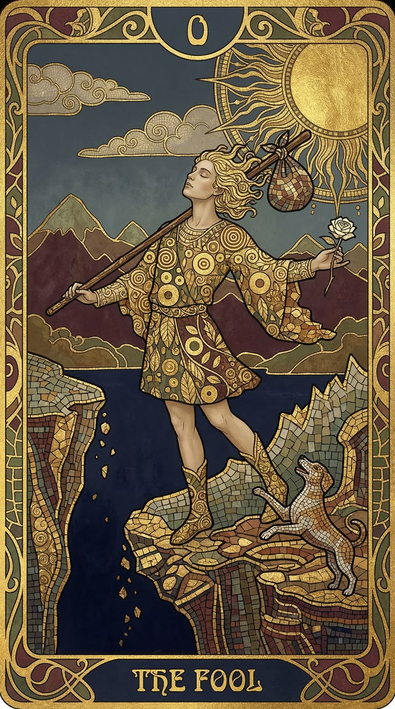
El Loco (Derecho)
Significado: Inocencia, nuevos comienzos, fe en el universo.
El Loco (Revés)
Significado: Imprudencia, falta de dirección, decisiones impulsivas.
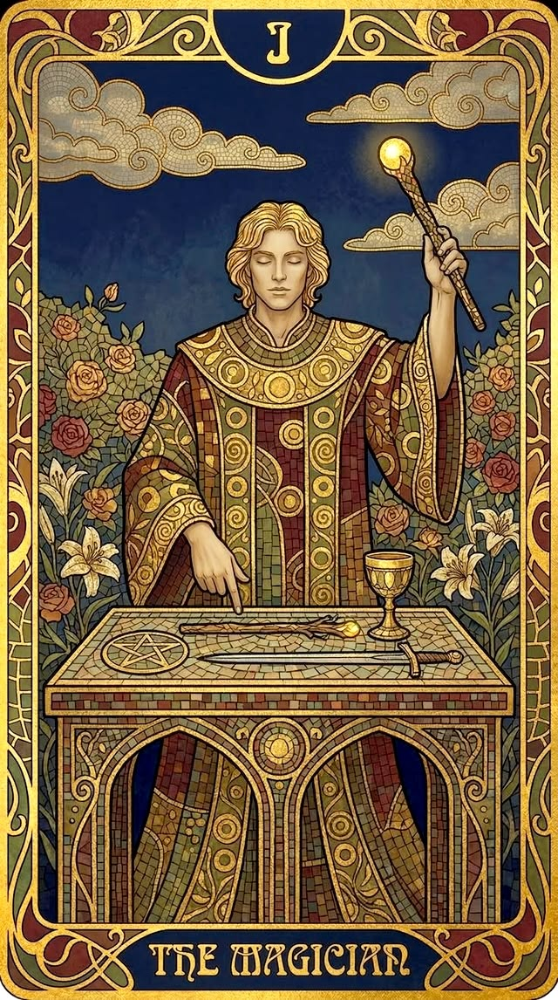
El Mago (Derecho)
Significado: Poder, iniciativa, creatividad, dominio de las herramientas.
El Mago (Revés)
Significado: Manipulación, talento malgastado, procrastinación, engaño.
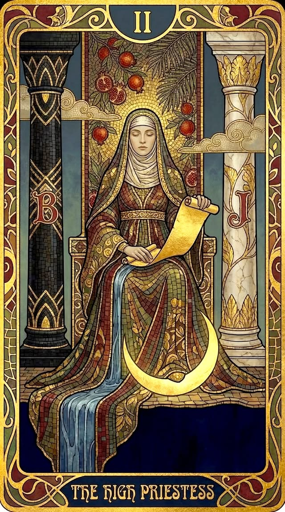
La Sacerdotisa (Derecho)
Significado: Intuición, misterio, sabiduría interior, conocimiento oculto.
La Sacerdotisa (Revés)
Significado: Secretos ocultos, falta de conexión espiritual, ignorar la intuición.
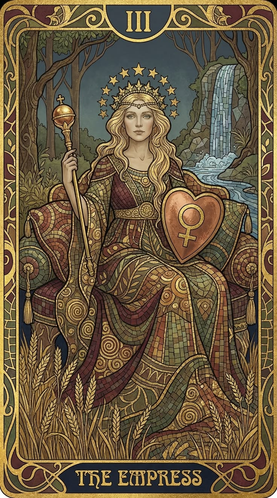
La Emperatriz (Derecho)
Significado: Abundancia, fertilidad, creatividad, cuidado maternal, prosperidad, belleza.
La Emperatriz (Revés)
Significado: Dependencia, falta de crecimiento, descuido, esterilidad, agobio, celos.
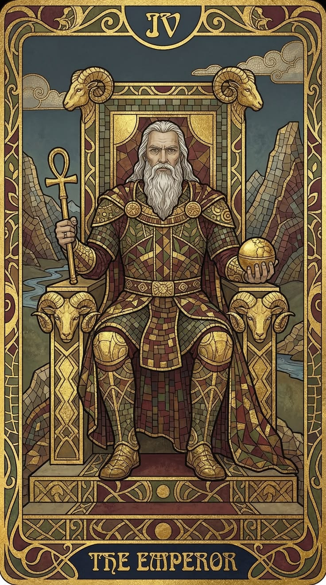
El Emperador (Derecho)
Significado: Autoridad, estabilidad, protección, estructura, liderazgo, control.
El Emperador (Revés)
Significado: Tiranía, terquedad, abuso de poder, falta de control, rigidez, autoritarismo.
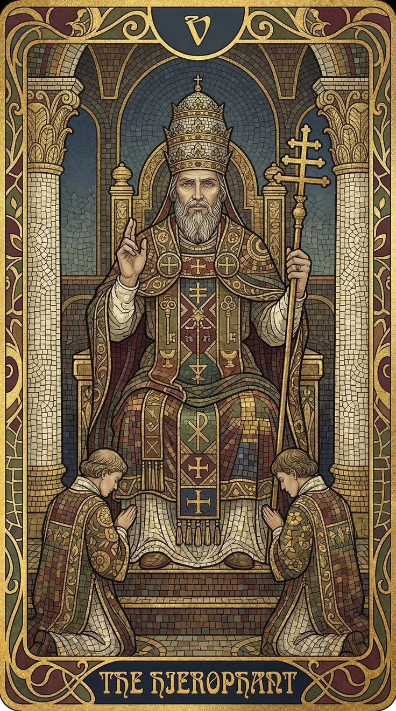
El Sumo Sacerdote (Derecho)
Significado: Sabiduría tradicional, enseñanza, fé, alianza, matrimonio, tradiciones.
El Sumo Sacerdote (Revés)
Significado: Dogmatismo, hipocresía, rebelión, romper las reglas, falta de fé.
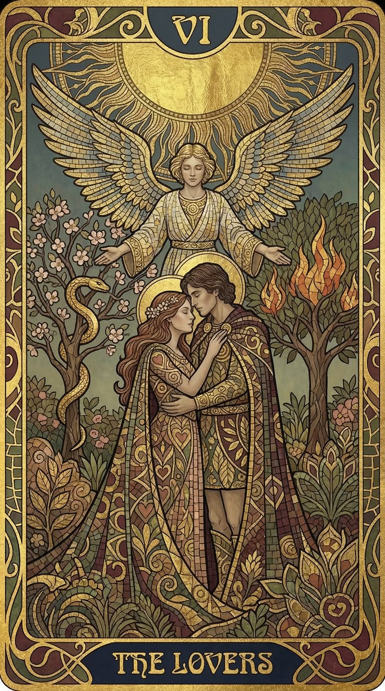
Los Enamorados (Derecho)
Significado: Unión, armonía, elección importante, amor, relaciones, pareja.
Los Enamorados (Revés)
Significado: Desunión, indecisión, ruptura, falta de comunicación, malas elecciones.
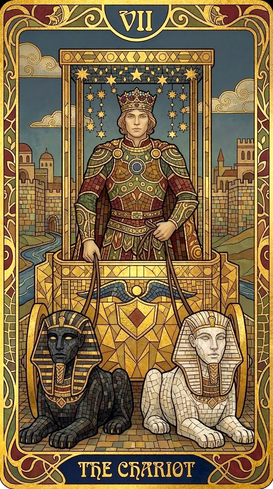
El Carro (Derecho)
Significado: Avance, determinación, control, victoria, viaje, superación de obstáculos.
El Carro (Revés)
Significado: Pérdida de control, falta de dirección, estancamiento, agresividad mal canalizada.
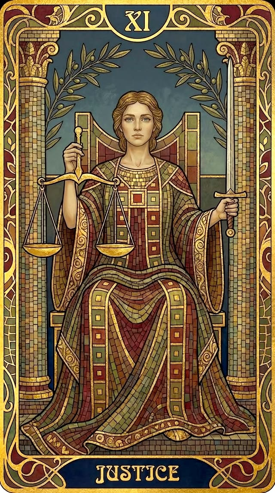
La Justicia (Derecho)
Significado: Equilibrio, causa y efecto, decisiones justas, verdad, leyes universales.
La Justicia (Revés)
Significado: Injusticia, desequilibrio, consecuencias kármicas, juicios erróneos, negación de la verdad.
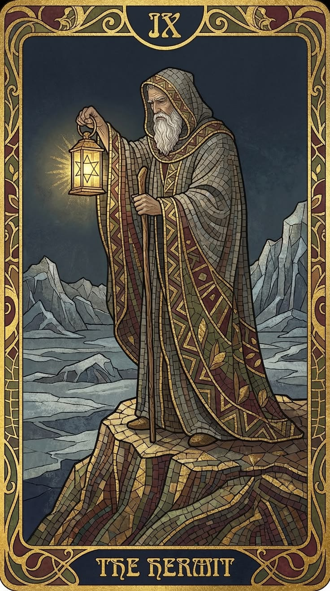
El Ermitaño (Derecho)
Significado: Introspección, sabiduría interior, búsqueda espiritual, soledad, guía interior.
El Ermitaño (Revés)
Significado: Aislamiento excesivo, depresión, falta de guía, alienación, negación de ayuda.
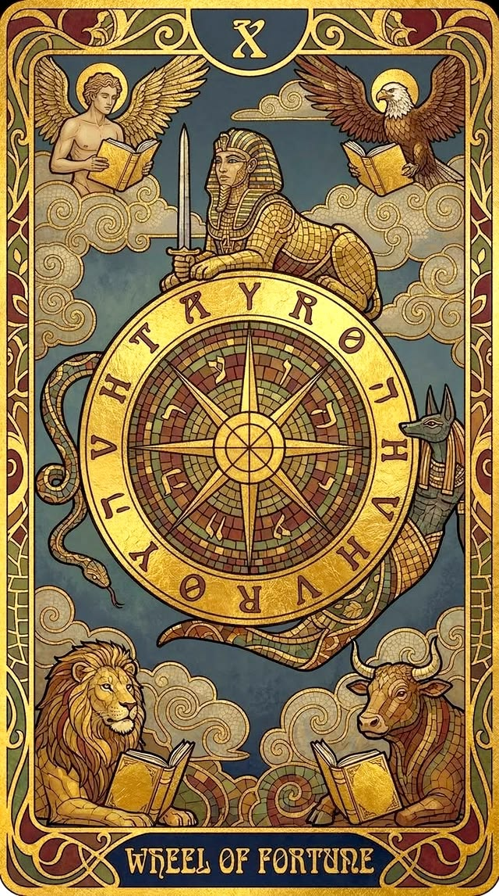
La Rueda de la Fortuna (Derecho)
Significado: Ciclo, cambio, buena suerte, destino, giro del karma, oportunidades inesperadas.
La Rueda de la Fortuna (Revés)
Significado: Mala suerte, estancamiento, mala sincronía, resistencia al cambio, destino negativo.
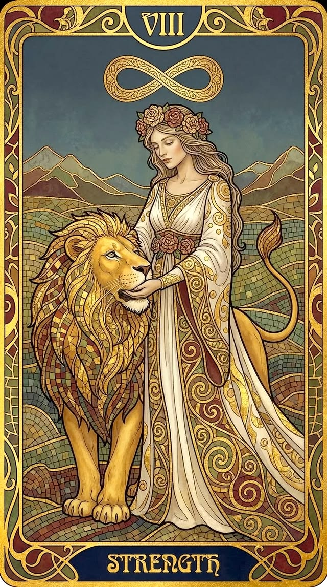
La Fuerza (Derecho)
Significado: Coraje, dominio interior, control de impulsos, compasión, fuerza mental y espiritual.
La Fuerza (Revés)
Significado: Debilidad, falta de control, inseguridad, agresividad, miedo a enfrentar los propios demonios.
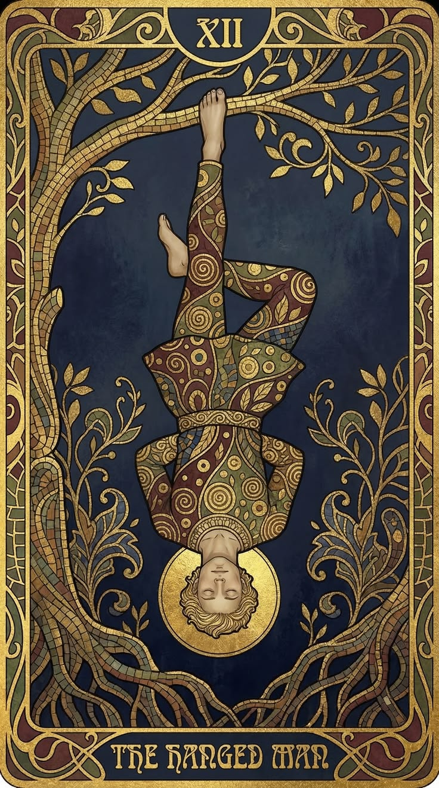
El Colgado (Derecho)
Significado: Sacrificio, pausa, cambio de perspectiva, rendirse para ganar, ver desde otro ángulo.
El Colgado (Revés)
Significado: Resistencia al cambio, sacrificios inútiles, estancamiento, falta de perspectiva.
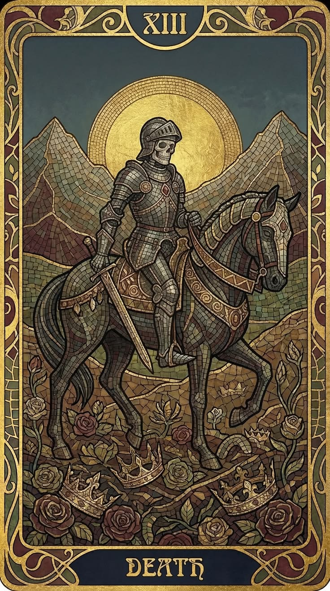
La Muerte (Derecho)
Significado: Fin de un ciclo, transformación profunda, renacimiento, dejar ir lo viejo.
La Muerte (Revés)
Significado: Estancamiento, resistencia al cambio, aferrarse a lo que ya murió, depresión.
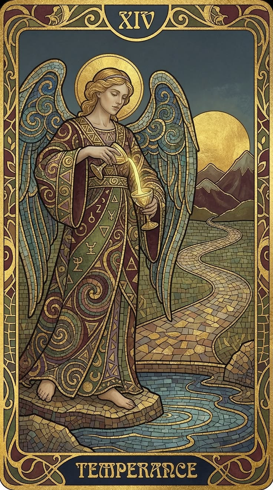
La Templanza (Derecho)
Significado: Equilibrio, sanación, paciencia, moderación, unión de opuestos, calma.
La Templanza (Revés)
Significado: Desequilibrio, excesos, impaciencia, conflicto interno, falta de armonía.
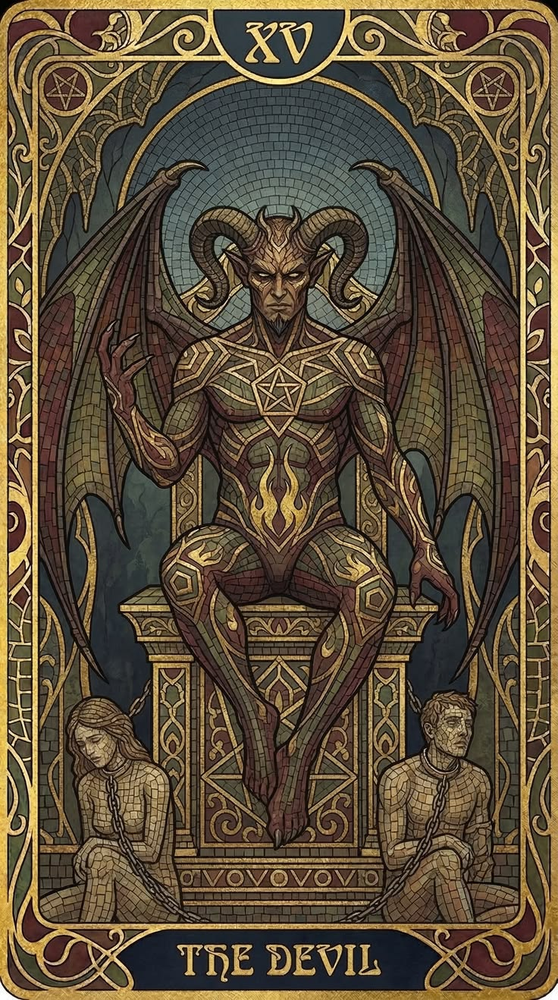
El Diablo (Derecho)
Significado: Ataduras, adicciones, materialismo, tentación, obsesión, esclavitud a los deseos.
El Diablo (Revés)
Significado: Liberación, superación de adicciones, ruptura de cadenas, despertar, recuperación del control.
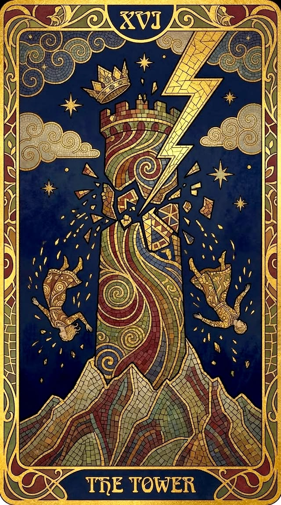
La Torre (Derecho)
Significado: Derrumbe, ruptura inesperada, revelación abrupta, destrucción de lo falso, cambio forzado.
La Torre (Revés)
Significado: Retraso del colapso, resistencia al cambio, mantenerse en una situación insostenible, miedo al derrumbe.
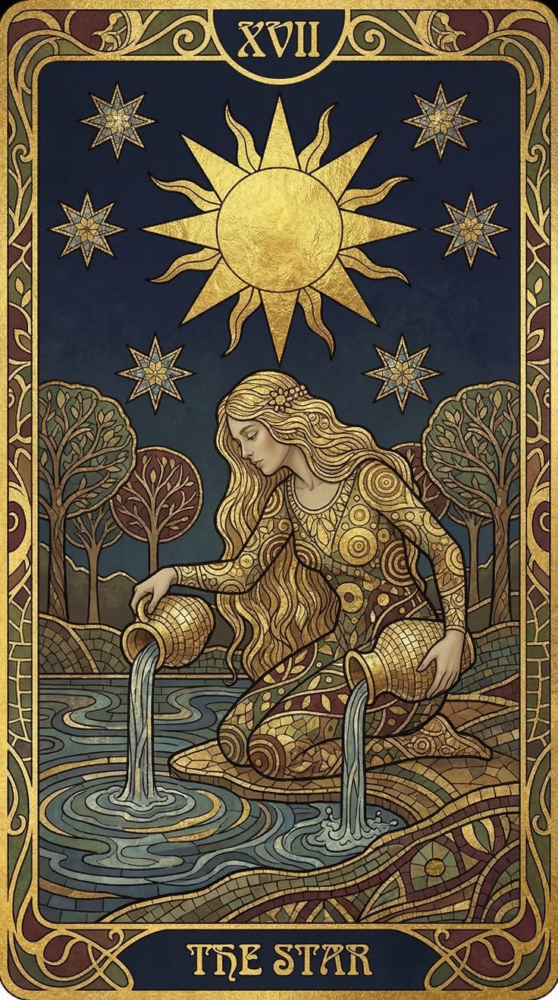
La Estrella (Derecho)
Significado: Esperanza, fe, inspiración, guía divina, sanación, paz interior, deseos cumplidos.
La Estrella (Revés)
Significado: Desesperanza, falta de fe, desánimo, desconexión con el propósito, pérdida de rumbo.
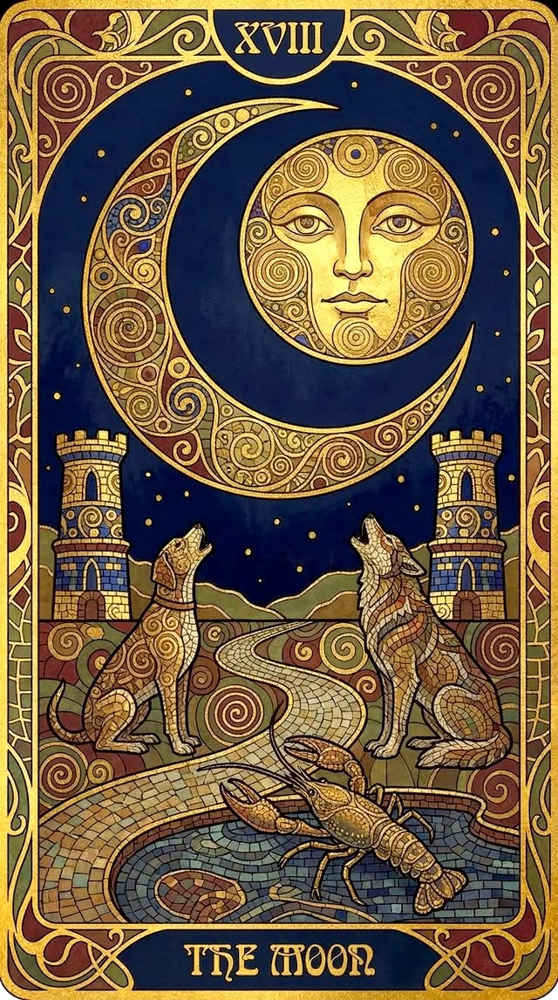
La Luna (Derecho)
Significado: Intuición, sueños, ilusiones, miedos ocultos, confusión, viaje interior.
La Luna (Revés)
Significado: Claridad, superación de miedos, revelación de secretos, fin de la confusión, despertar.
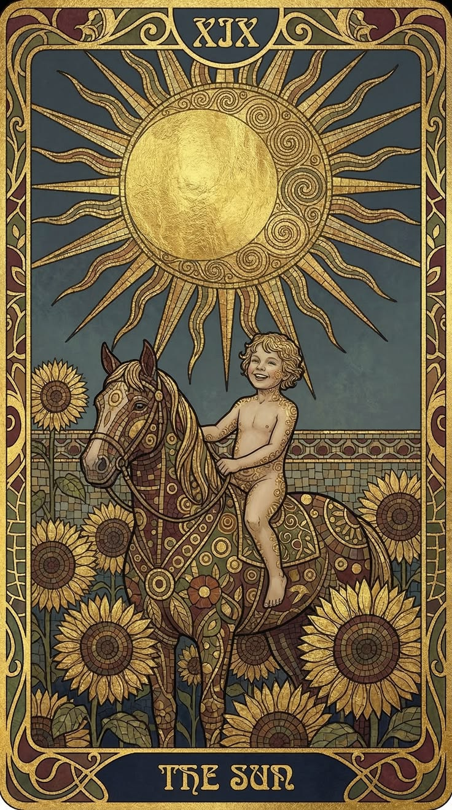
El Sol (Derecho)
Significado: Éxito, alegría, vitalidad, claridad, confianza, iluminación, felicidad absoluta.
El Sol (Revés)
Significado: Optimismo excesivo, falta de realismo, ego inflado, frustración, demora en la felicidad.
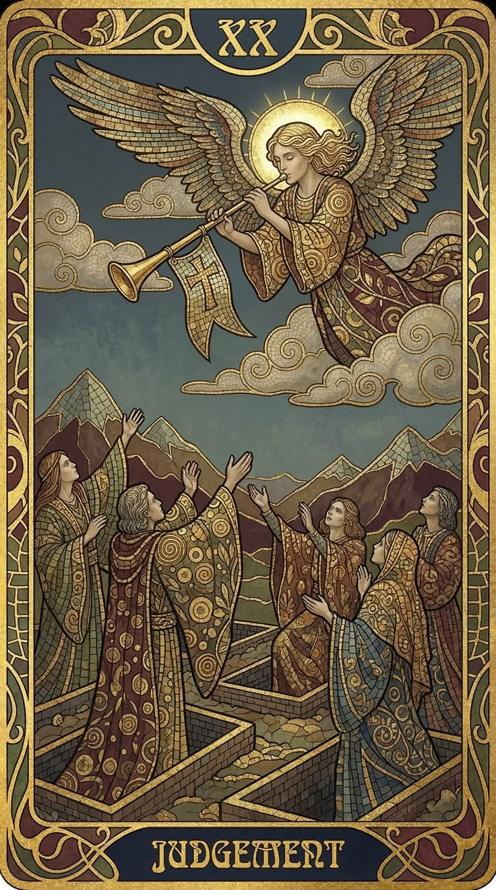
El Juicio (Derecho)
Significado: Renacimiento, despertar espiritual, evaluación, llamada del destino, revelación, cambio profundo.
El Juicio (Revés)
Significado: Negación del llamado, miedo al cambio, estancamiento, juicios erróneos, falta de autoconocimiento.
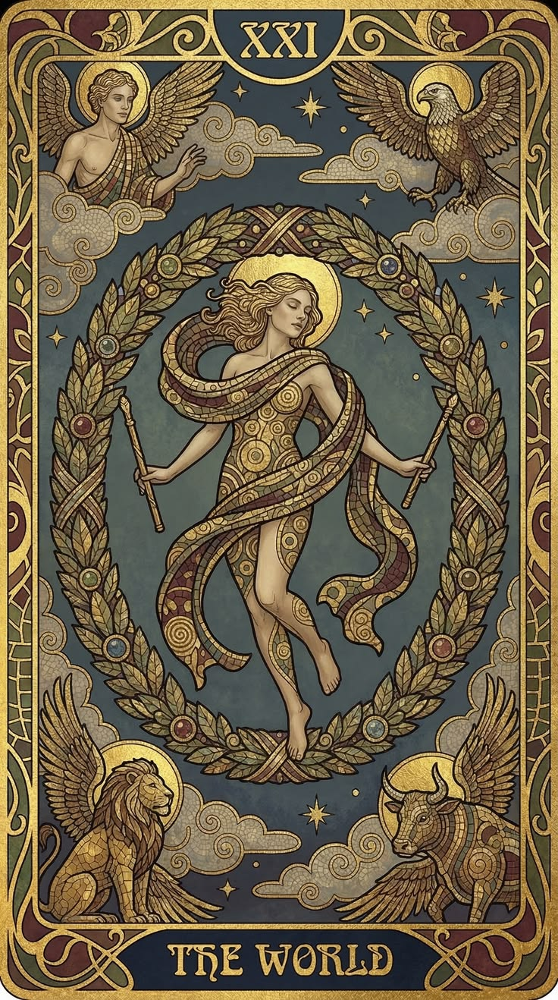
El Mundo (Derecho)
Significado: Plenitud, culminación, éxito total, ciclo completado, unificación, paz, dominio.
El Mundo (Revés)
Significado: Falta de cierre, sentir que algo quedó inconcluso, ataduras al pasado, necesidad de completar un ciclo.
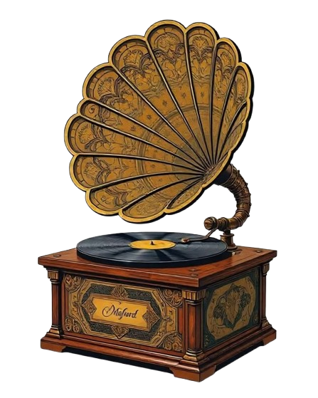